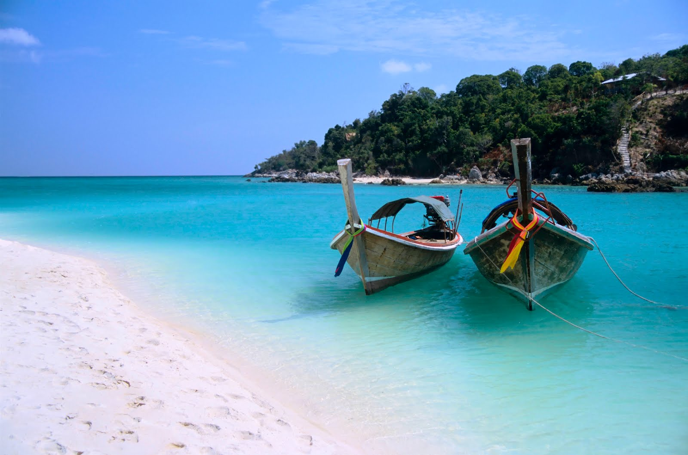
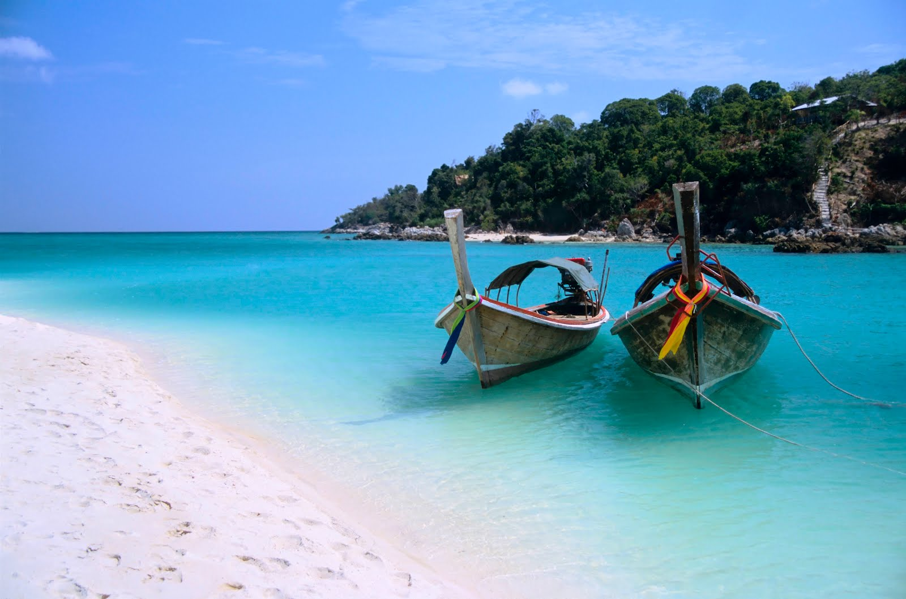

Zanzibar
Zanzibar is a semi-autonomous part of Tanzania, in East Africa. It is composed of the Zanzibar Archipelago in the Indian Ocean, 25–50 kilometres off the coast of the mainland.
View Larger Map
Zanzibar is a semi-autonomous part of Tanzania, in East Africa. It is composed of the Zanzibar Archipelago in the Indian Ocean, 25–50 kilometres off the coast of the mainland.
